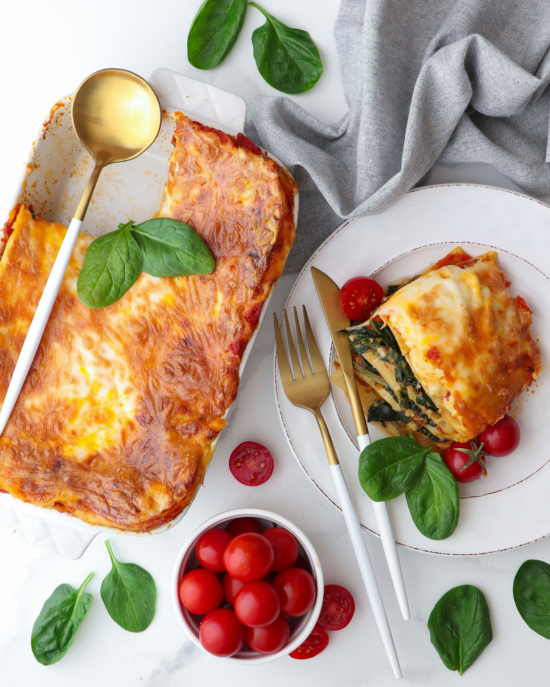

To prepare this delicious lasagna, a flavorful meat sauce is made by sauteing onions and garlic before adding ground beef and simmering it with tomatoes, tomato paste, and Italian herbs such as oregano and basil. In a separate bowl, a creamy cheese mixture is prepared using ricotta cheese, Parmesan cheese, and eggs. The lasagna is then assembled in layers, beginning with sauce at the base of the baking dish, followed by pasta sheets, the cheese mixture, more sauce, and shredded mozzarella cheese. These layers are repeated until all ingredients are used.To prepare this delicious lasagna, a flavorful meat sauce is made by sautéing onions and garlic before adding ground beef and simmering it with tomatoes, tomato paste, and Italian herbs such as oregano and basil. In a separate bowl, a creamy cheese mixture is prepared using ricotta cheese, Parmesan cheese, and eggs. The lasagna is then assembled in layers, beginning with sauce at the base of the baking dish, followed by pasta sheets, the cheese mixture, more sauce, and shredded mozzarella cheese. These layers are repeated until all ingredients are used.To prepare this delicious lasagna, a flavorful meat sauce is made by sauteing onions and garlic before adding ground beef and simmering it with tomatoes, tomato paste, and Italian herbs such as oregano and basil. In a separate bowl, a creamy cheese mixture is prepared using ricotta cheese, Parmesan cheese, and eggs. The lasagna is then assembled in layers, beginning with sauce at the base of the baking dish, followed by pasta sheets, the cheese mixture, more sauce, and shredded mozzarella cheese. These layers are repeated until all ingredients are used.To prepare this delicious lasagna, a flavorful meat sauce is made by sauteing onions and garlic before adding ground beef and simmering it with tomatoes, tomato paste, and Italian herbs such as oregano and basil. In a separate bowl, a creamy cheese mixture is prepared using ricotta cheese, Parmesan cheese, and eggs. The lasagna is then assembled in layers, beginning with sauce at the base of the baking dish, followed by pasta sheets, the cheese mixture, more sauce, and shredded mozzarella cheese. These layers are repeated until all ingredients are used.